무선설비산업기사 (2007-05-13 기출문제)
1과목: 디지털 전자회로
1. 1[kHz]의 주파수를 500[Hz]로 변환하여 사용하고자 할 때 사용되는 Flip-Flop 회로는?
- RS F-F
- JK F-F
- T F-F
- D F-F
(정답률: 알수없음)

2. 다음 중 그 값이 작을수록 좋은 것은?
- 증폭기 바이어스 회로의 안정계수
- 차동 증폭기의 동상신호 제거비(CMRR)
- 증폭기의 신호대 잡음비
- 정류기의 정류효율
(정답률: 알수없음)
3. 전가산기(full adder)의 입ㆍ출력 구조는?
- 입력 2개, 출력 2개
- 입력 3개, 출력 2개
- 입력 2개, 출력 3개
- 입력 3개, 출력 3개
(정답률: 50%)
4. 다음 RL회로에서 기전력이 E일 때, SW를 닫는 순간 t초 후에 흐르는 전류(i)는?
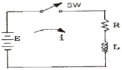
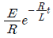
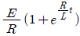
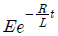
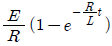
(정답률: 알수없음)
5. 다음 그림 회로의 용도는? (단, 다이오드는 이상적이고, VR1 ＜ VR2 이다.)
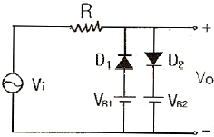
- 클립핑
- 전압배율기
- 정류기
- 피크검출기
(정답률: 알수없음)
6. 다음 중 B급 푸시풀 전력증폭기(push-pull power amp)에서 제거되는 것은?
- 기본파
- 제2고조파
- 제3고조파
- 제5고조파
(정답률: 알수없음)
7. 다음 중 이미터 플로어(Emitter follower) 증폭기의 특징이 아닌 것은?
- 부하에 병렬로 존재하는 정전용량의 영향이 적으므로 주파수 특성이 좋아진다.
- 전압 증폭도는 항상 1보다 크다.
- 임피던스 정합에 많이 이용된다.
- 출력 파형의 찌그러짐이 적다.
(정답률: 알수없음)
8. 변조도 50%의 진폭변조에서 반송파 평균전력이 500[mW] 일 때 피변조파의 평균전력은 약 얼마인가?
- 523[mW]
- 542[mW]
- 563[mW]
- 580[mW]
(정답률: 알수없음)
9. 다음 중 입력신호가 없어도 신호파를 발생시키는 회로는?
- 적분기
- 미분기
- 이상 발진기
- 시미트 트리거
(정답률: 알수없음)
10. 피어스(pierce) B-E형 수정발진회로는 컬렉터 회로의 임피던스가 어떨 때 가장 안정한 발진을 지속하는가?
- 유도성
- 용량성
- 저항성
- 부저항성
(정답률: 알수없음)
11. 다음 중 DPCM에 대한 설명으로 틀린 것은?
- 먼저 신호파를 표본화 한다.
- 양자화한 다음 부호화 한다.
- 송신측에 예측기가 필요하다.
- 주파수 분할방식으로 다중화가 쉽다.
(정답률: 알수없음)
12. 정논리(positive logic)에서 입력이 A, B일 때 회로의 출력(Y)을 나타내는 논리식은?
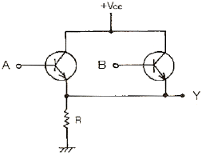
- AB
- A+B
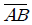
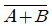
(정답률: 알수없음)
13. 다음 중 Flip-Flop 과 가장 관계 없는 것은?
- RAM
- Decoder
- Counter
- Register
(정답률: 알수없음)
14. 다음의 논리식을 최소의 NAND 게이트만으로 구성하기 위해 필요로 하는 NAND 게이트의 종류와 개수가 옳은 것은? (단, 인버터는 2입력 NAND 게이트를 사용함)
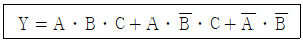
- 2입력 NAND 3개, 3입력 NAND 4개
- 2입력 NAND 3개, 3입력 NAND 3개
- 2입력 NAND 4개, 3입력 NAND 3개
- 2입력 NAND 2개, 3입력 NAND 4개
(정답률: 알수없음)
15. 다음 중 이상적인 차동증폭기에서 동상모드의 이득은?
- 0
- 1
- 180
- 무한대
(정답률: 알수없음)
16. 다음 그림에 나타난 연산 증폭기의 회로는?
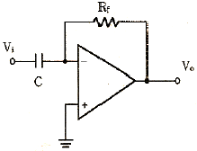
- 가산기 회로
- 적분 회로
- 미분 회로
- 차동증폭 회로
(정답률: 알수없음)
17. 트랜지스터의 스위칭 동작에서 turn-off 시간은?
- 지연시간(td)
- 지연시간(td)+상승시간(tγ)
- 축적시간(ts)
- 축적시간(ts)+하강시간(tf)
(정답률: 알수없음)
18. 아래와 같은 4변수 카르노도를 간단히 했을 때 논리식은?
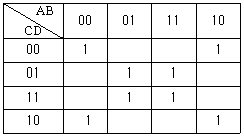
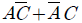
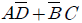
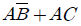
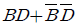
(정답률: 알수없음)
19. 다음 중 TTL gate에서 스위칭 속도를 높이기 위해 사용되는 다이오드는?
- 바랙터 다이오드
- 제너 다이오드
- 소트키 다이오드
- 터널 다이오드
(정답률: 알수없음)
20. 다음 펄스 파형에서 펄스의 Duty Cycle은 몇 [%]인가? (단, τ=0.5[μs], T=10[μs])
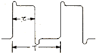
- 5[%]
- 10[%]
- 20[%]
- 25[%]
(정답률: 60%)
2과목: 무선통신 기기
21. 다음은 수정발진기의 발진주파수 변동원인과 그 대책이다. 이 중 적합하지 않은 것은?
- 주위 온도의 변화 : 수정진동자, 트랜지스터 등의 부품은 온도계수가 적은 것을 사용
- 부하의 변동 : 다음 단과의 결합을 밀하게 함
- 전원 전압의 변동 : 정전압 회로를 사용
- 회로소자의 변동 : 부품에 대한 방습 및 방진장치 사용
(정답률: 알수없음)
22. FM 송신기에서 주파수편이는 변조지수와 어떤 관계가 있는가? (단, 변조주파수는 일정)
- 변조지수와 반비례
- 변조지수와 비례
- 변조지수의 제곱에 비례
- 변조지수의 제곱에 반비례
(정답률: 알수없음)
23. 다음 그림의 방향성 결합기에 대한 설명 중 적합하지 않은 것은?
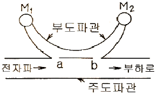
- 이 계기로 반사계수를 구할 수 있다.
- a점, b점 사이의 간격은 1/4 파장이다.
- 이 계기로 정재파비를 구할 수 있다.
- 계기 M2는 반사파에 비례한 전력을 지시한다.
(정답률: 알수없음)
24. 맥동율이 2%일 때 맥동분의 전압이 5V 이었다면, 이 때의 직류 전압은 몇 V 인가?
- 100
- 125
- 200
- 250
(정답률: 알수없음)
25. 직류 출력전압이 무부하시 225V, 전부하시의 출력전압이 200V 였다면 전압 변동율은 몇 % 인가?
- 10
- 11
- 12.5
- 15.5
(정답률: 알수없음)
26. FM 복조기의 바람직한 복조 주파수 특성곡선에 대한 설명 중 적합하지 않은 것은?
- 중심 주파수 fo에 대하여 대칭적일 것
- 직선부분이 길 것
- 중심 주파수 fo 부근에서 경사가 될 수 있는 한 완만 할 것
- 중심 주파수 fo에서는 출력전압이 0(기준값)일 것
(정답률: 알수없음)
27. 수신기의 잡음지수(NF)에 대한 설명으로 옳은 것은?
- 수신기 초단 증폭기의 이득과 잡음지수가 수신기 전체 잡음지수에 매우 큰 영향을 미친다.
- 안테나로부터 인가되는 외부 잡음비이다.
- 수신기의 잡음지수가 큰 값일수록 내부잡음은 적다.
- 수신기의 내부잡음이 크면 NF=1 이다.
(정답률: 알수없음)
28. 무선통신에서 변ㆍ복조를 하는 이유로 적합하지 않은 것은?
- 복사 용이
- 다중화 가능
- 잡음과 간섭 억제
- 근거리 전송에 유리
(정답률: 알수없음)
29. 무선 수신기의 일반적인 요구조건 중 틀린 것은?
- 왜곡이 클 것
- 선택도가 높을 것
- 안정도가 좋을 것
- 감도가 우수할 것
(정답률: 알수없음)
30. FM 통신방식이 AM 방식에 비해서 신호대 잡음비가 좋은 이유로 가장 타당한 것은?
- 레벨변동이 크므로
- 진폭제한기를 사용하므로
- 점유주파수 대폭이 넓기 때문에
- 송신장치가 간단하기 때문에
(정답률: 알수없음)
31. 슈퍼헤테로다인 수신기에 입력회로를 삽입하는 목적이 아닌 것은?
- 스퓨리어스 레스폰스에 의한 방해를 경감하기 위함
- 근접주파수 혼신을 줄이기 위함
- 외부 잡음을 감소시키기 외함
- 부차적으로 복사되는 전파를 주파수 선택작용에 의하여 감소시키기 위함
(정답률: 20%)
32. 광대역 FM 변조에서 최대 주파수 편이가 30kHz이고, 변조 주파수가 5kHz일 때 FM 신호의 대역폭은 약 몇 kHz 인가?
- 10
- 35
- 70
- 100
(정답률: 알수없음)
33. 위성에서 수신한 GHz 대의 주파수를 신호처리를 위해 먼저 낮은 주파수로 변환하는데, 이 변환이 이루어지는 수신측의 장치는?
- 디멀티플렉서(Demultiplexer)
- 다이프렉서(Diplexer)
- 다운 컨버터(Down converter)
- 저잡음 증폭기(LNA)
(정답률: 알수없음)
34. SSB 통신방식에 관한 설명 중 맞지 않은 것은?
- DSB에 비해 회로구성이 간단하다.
- 일반적으로 대역통과 여파기(BPF)를 이용하여 원하는 측파대를 만든다.
- S/N비가 DSB에 비해 개선된다.
- DSB의 상하측파대 중 한 측파대만을 통신에 이용한다.
(정답률: 알수없음)
35. 다음 중 FM 무선송신기의 구성요소로서 적합하지 않는 것은?
- 충전기
- 발진기
- 증폭기
- 변조기
(정답률: 알수없음)
36. 다음 중 간접 FM 변조회로에서 변조용으로 사용되는 다이오드는?
- 바랙터 다이오드
- 터널 다이오드
- 제너 다이오드
- 쇼트키 다이오드
(정답률: 알수없음)
37. 진폭변조(AM)에서 과변조가 발생한 경우 일어나는 현상이 아닌 것은?
- 피변조파에 많은 고조파가 포함된다.
- 점유 주파수 대역폭이 넓어지게 된다.
- 다른 통신에 혼선을 준다.
- 수신기에 과부하가 걸린다.
(정답률: 46%)
38. 주파수 도약(FH) 변조방식의 송ㆍ수신기 구성도에서 송ㆍ수신측 공통으로 필요한 요소로 맞는 것은?
- 주파수 합성기, PN 부호 발생기
- 반송파 발진기, 주파수 혼합기
- 주파수 혼합기, 중간주파 증폭기
- 평형 변조기, BPF
(정답률: 알수없음)
39. 수정 발진자의 직렬공진 주파수를 fs, 병렬공진 주파수를 fp 라 할 때 안정된 발진을 하기 위한 동작주파수 f 의 범위로 가장 적합한 것은?
- fs ＜ f ＜ fp
- fs ＞ f
- fp ＜ f ＜ fs
- fp ＜ f
(정답률: 알수없음)
40. 주파수 체배기에서 주로 사용하는 바이어스 방법은?
- A급
- AB급
- B급
- C급
(정답률: 47%)
3과목: 안테나 개론
41. 빛의 속도를 C[m/s]라 할 때 자유공간(진공)의 유전율[F/m]은? (단, μ0=4π×10-7)
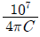
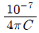
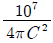
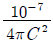
(정답률: 알수없음)
42. 그림과 같은 반파장 폴디드(folded) 다이폴 안테나에서 A, B점에 접속할 급전선의 특성 임피던스는 몇 Ω이 가장 적합한가? (단, 소자수는 3개이다.)
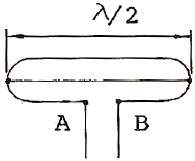
- 73
- 146
- 219
- 657
(정답률: 20%)
43. 급전선의 반사계수를 나타내는 식 중 옳은 것은? (단, Zo:특성임피던스, Z:수단의 부하임피던스)
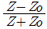
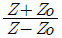
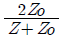
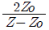
(정답률: 알수없음)
44. 동축 급전선의 특성 임피던스는? (단, D:외부 도체의 직경, d:내부 도체의 직경)
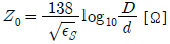
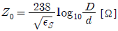
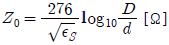
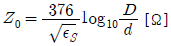
(정답률: 60%)
45. λ/4 수직접지 안테나의 수직면내 지향 특성은?
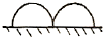
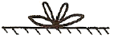
(정답률: 알수없음)
46. 자유공간에 있는 길이 2m의 미소 다이폴 안테나에서 주파수 3MHz의 전파를 공급할 경우 최대복사 방향에서의 복사저항은 약 몇 Ω 인가?
- 0.316
- 0.632
- 3.16
- 6.32
(정답률: 알수없음)
47. 복사저항이 36Ω, 접지저항이 14Ω인 안테나에 1kW의 전력이 공급되고 있을 때, 복사전력은 몇 W 인가? (단, 여기서 다른 손실은 무시한다.)
- 350
- 390
- 720
- 2570
(정답률: 알수없음)
48. 복사전력 P[W]인 λ/4 수직접지 안테나에서 최대 복사방향으로 d[m]만큼 떨어진 점의 전계의 세기는 몇 V/m 인가?
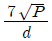
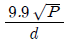
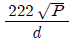
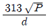
(정답률: 알수없음)
49. 파라볼라 안테나(parabola antenna)의 이득 G는? (단, η는 개구효율, A는 기하학적 개구면적)
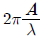
- η4πλA
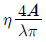
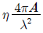
(정답률: 30%)
50. 단방향 지향성 안테나가 아닌 것은?
- 엔드파이어 헤리컬 안테나(Endfire Helical Antenna)
- 파라볼라 안테나(Parabola Antenna)
- 코너 리플렉터 안테나(Corner reflector Antenna)
- 루프 안테나(Loop Antenna)
(정답률: 알수없음)
51. 마이크로웨이브(micro wave) 통신의 특징이 아닌 것은?
- 사용주파수의 범위가 넓어 광대역이 가능하다.
- PTP(point to point) 통신이 가능하다.
- 중계 없이 원거리 통신이 가능하다.
- 외부 잡음의 영향이 적다.
(정답률: 알수없음)
52. 두개 이상의 안테나를 서로 떨어진 곳에 설치하고 두 출력을 합성하여 페이딩을 방지하는 방식은?
- 주파수 다이버시티
- 공간 다이버시티
- 편파 다이버시티
- 변조 다이버시티
(정답률: 알수없음)
53. 공전잡음을 경감시키는 방법 중 틀린 것은?
- 지향성 안테나를 사용한다.
- 수신기의 수신대역폭을 좁히고 선택도를 높인다.
- 송신출력을 감소시켜 수신점의 S/N 비를 작게 한다.
- 수신기의 적절한 잡음억제회로를 넣는다.
(정답률: 알수없음)
54. 어느 송ㆍ수신소 사이의 MUF(maximum usable frequency)가 10MHz 일 때 FOT(frequency of optimum transmission)는 얼마인가?
- 5MHz
- 6.5MHz
- 7.5MHz
- 8.5MHz
(정답률: 알수없음)
55. 다음 중 전리층 반사파를 적게 하고 양청구역을 넓히기 위하여 만든 중파방송용 안테나는?
- 원정관 안테나
- 루프 안테나
- 웨이브 안테나
- 애드콕 안테나
(정답률: 알수없음)
56. 롬빅(rhombic) 안테나에 대한 설명으로 틀린 것은?
- 진행파 안테나로서 광대역이다.
- 설치장소가 협소하고, 수직편파용 안테나이다.
- 단방향성으로 상대이득은 대략 10~13[dB] 정도이다.
- 부엽이 비교적 많고, 효율이 나쁘다.
(정답률: 알수없음)
57. Bellini-Tosi 안테나에 대한 설명 중 틀린 것은?
- loop 안테나 2개를 직각으로 배치하고 여기에 goniometer를 연결한 것이다.
- 자동 방향탐지기(ADF)에 사용한다.
- 수색코일(search coil)에 사용한다.
- 단일방향의 결정을 위한 수직 안테나는 필요 없다.
(정답률: 알수없음)
58. 라디오 덕트(radio duct)의 발생 원인에 해당하지 않는 것은?
- 주간 냉각에 의한 라디오 덕트
- 전선에 의한 라디오 덕트
- 이류에 의한 라디오 덕트
- 침강에 의한 라디오 덕트
(정답률: 알수없음)
59. 급전선에서 정재파비가 1인 경우는?
- 반사계수의 값이 1이다.
- 급전선의 고유 임피던스가 1Ω이다.
- 급전선의 고유 임피던스와 부하 임피던스가 같다.
- 급전선의 표피효과를 무시할 수 있을 때이다.
(정답률: 알수없음)
60. 반파장 소자를 종횡으로 일정하게 배열하여 각 소자에 동 위상 전류를 공급하면 한쪽 방향으로 지향성이 강해지는 안테나는?
- V형 안테나
- 롬빅 안테나
- 빔 안테나
- 제펠린 안테나
(정답률: 알수없음)
4과목: 전자계산기 일반 및 무선설비기준
61. 정보를 기억 장치에 기억시키거나 읽어내는 명령을 한 후부터 실제로 정보가 기억 또는 읽기 시작할 때까지의 소요 시간을 의미하는 것은?
- 접근 시간(access time)
- 실행 시간(run time)
- 지연 시간(idle time)
- 탐색 시간(search time)
(정답률: 알수없음)
62. 컴퓨터에서 보수(complement)를 사용하는 이유로 가장 타당한 것은?
- 가산의 결과를 정확하게 얻기 위해
- 감산을 가산의 방법으로 처리하기 위해
- 승산의 연산과정을 간단히 하기 위해
- 제산의 불필요한 과정을 생략하기 위해
(정답률: 알수없음)
63. 다음 선형리스트 중에서 데이터의 입력순서와 출력순서가 바뀌는 것은?
- QUEUE
- STACK
- FIFO
- HEAP
(정답률: 알수없음)
64. 단일 채널로 복수 개의 입ㆍ출력 장치를 연결할 수 있는 것은?
- Multiplexer
- Demultiplexer
- Encoder
- Decoder
(정답률: 80%)
65. 데이터 처리 방식에 대한 설명 중 옳지 않은 것은?
- 일괄 처리 방식은 일정한 시간 내에 수집된 데이터 또는 프로그램을 일괄적으로 처리하는 방식이다.
- 시분할 처리 방식은 한 대의 컴퓨터를 동시에 다수의 사용자가 공동 사용하는 방식이다.
- 실시간 처리 방식은 데이터를 입력하는 즉시 처리 결과가 출력되어 되돌려 받는 방식이다.
- 온라인 처리 방식은 입ㆍ출력장치가 CPU의 직접 제어를 받지 않고 작업을 수행하는 방식이다.
(정답률: 알수없음)
66. 기계어에 대한 설명으로 적합하지 않은 것은?
- 계산속도가 느리다.
- 작성된 프로그램은 판독이 어렵다.
- 하나의 명령으로 한가지 처리만 된다.
- 컴퓨터 기종마다 명령어 체계가 다르다.
(정답률: 알수없음)
67. 마이크로프로세서 내에서 산술 연산의 기본 연산은?
- 덧셈
- 뺄셈
- 곱셈
- 나눗셈
(정답률: 알수없음)
68. 가장 최근에 인출된 명령어 코드가 저장되어 있는 일시적인 저장 레지스터는?
- MBR
- PC
- IR
- MAR
(정답률: 알수없음)
69. 8진수 (1234)8을 10진수로 변환한 후, 다시 8421 코드로 변환하면?
- 0110 0111 1001
- 0110 0111 1000
- 0110 0110 0010
- 0110 0110 1000
(정답률: 알수없음)
70. 다음 중 DMA(Direct Memory Access) 제어 방식에 대한 셜명으로 틀린 것은?
- DMA 제어 방식은 마이크로프로세서를 거치지 않고 데이터를 전송하는 방식이다.
- DMA 장치는 블록으로 대용량의 데이터를 전송할 수 있다.
- DMA 장치는 일반적으로 플로피 디스크를 포함, I/O 주변 장치와 기억장치 사이의 데이터 전송에 사용된다.
- DMA 제어 방식은 프로그램 I/O 제어 방식 또는 인터럽트 I/O 제어 방식보다 속도가 느린 단점이 있다.
(정답률: 알수없음)
71. 다음 ( )안에 들어갈 내용으로 가장 적합한 것은?
- 5
- 10
- 20
- 50
(정답률: 알수없음)
72. 정보통신기기인증서에 기재사항이 아닌 것은?
- 인증번호
- 인증의 종류
- 인증의 명칭
- 정보통신기기의 명칭ㆍ모델명
(정답률: 17%)
73. 100MHz 이하 디지털텔레비전 방송국의 주파수 허용편차는? (단, 백만불율로 표시한 것임)
- 0.1
- 0.5
- 1
- 2
(정답률: 알수없음)
74. 초단파방송 또는 텔레비전방송을 행하는 방송국 송신설비의 공중선전력 허용편차는?
- 상한 5퍼센트, 하한 10퍼센트
- 상한 10퍼센트, 하한 20퍼센트
- 상한 50퍼센트, 하한 20퍼센트
- 상한 20퍼센트, 하한 : 제한없음
(정답률: 알수없음)
75. 정보통신부장관이 전파자원의 공평하고 효율적인 이용을 촉진하기 위하여 필요한 경우에 시행하여야 할 사항이 아닌것은?
- 주파수분배의 변경
- 주파수의 국제등록
- 주파수의 공동사용
- 새로운 기술방식으로의 전환
(정답률: 알수없음)
76. 무선국에서 사용하는 주파수마다의 중심주파수를 무엇이라 하는가?
- 기준주파수
- 지정주파수
- 특성주파수
- 필요주파수
(정답률: 알수없음)
77. 다음 무선설비의 공중선계에 접지장치를 생략할 수 있는 것은?
- 기지국
- 선박국
- 육상이동국
- 중파방송국
(정답률: 알수없음)
78. 형식검정을 받아야 하는 무선설비의 기기는?
- 이동가입무선전화장치
- 비상위치지시용 무선표지설비
- 주파수공용 무선전화장치
- 생활무선국용 무선설비의 기기
(정답률: 59%)
79. 특정한 주파수를 이용할 수 있는 권리를 특정인에게 부여하는 것을 무엇이라 하는가?
- 주파수분배
- 주파수할당
- 주파수지정
- 주파수이용
(정답률: 알수없음)
80. 송신설비의 공중선ㆍ급전선 등 고압전기를 통하는 장치는 원칙적으로 사람이 보행하거나 기거하는 평면으로부터 몇미터 이상의 높이에 설치하여야 하는가?
- 1.5
- 2.5
- 3.5
- 4
(정답률: 알수없음)